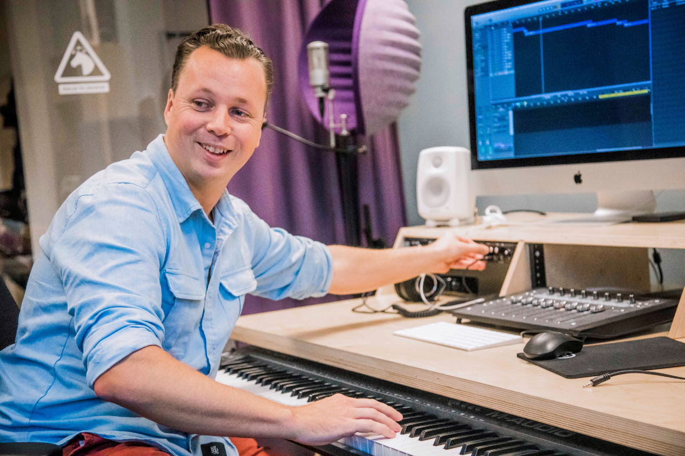

Egy játékban a 3D-s grafika, az animációk és a fényeffektusok állnak a középpontban. De a háttérben van valami, ami igazán életre kelti a világokat: a zene és a hangok.
Ma egy olyan elemre irányítjuk a figyelmet a játékbeli történetmesélésből, amely általában a háttérben működik. Bemutatjuk a játékbeli zene és hangtervezés varázslatos világát.
Axel Bellinder munkájának nagy részét a Star Stable központjában található zenei stúdióban végzi. A legelső Starshine Legacy játékok óta része Jorvik hangvilágának. A Star Stable zenei és hangrendezőjeként ő komponálja és produceli a Star Stable Online eredeti zenéinek és hangtervezésének nagy részét.
A zenei aláfestés ikonikus jelentőségű a Star Stable régóta játszó felhasználói számára: hallgatása azonnal visszarepít minket Silverglade gazdag mezőire vagy a Rejtett Dinosaurus-völgy jeges ködébe.

„A Star Stable egy kaland, és én mindig olyan zenét keresek, amelyben érezhető a kaland szelleme. Arra törekszem, hogy minden területnek meglegyen a maga jellegzetes hangzása. Az összes zenei aláfestésnek igazán illeszkednie kell a helyszín és a környezet hangulatához – legyen az drámai, hangulatos, kalandos vagy varázslatos –, ez határozza meg az alaphangot. Például Jorvik Cityben egy kicsit inkább egy orchestralis-elektronikus hibrid hangzás dominál, hogy egy kis városi pulzálást adjon neki, szemben a Rejtett Dinoszaurusz-völggyel, ahol teljes mértékben az epikus kaland hangulatára koncentráltam.”
A zene mellett vannak kevésbé bombasztikus hangok is, amelyek nagyban hozzájárulnak a történetmeséléshez és a Star Stable-ben tapasztalható mindennapi Jorvik-élményhez. Ezek a háttérhangok, a természet és az állatok hangjai. Valamint azok a hangok, amelyek akkor keletkeznek, amikor valami történik, például amikor egy kő leesik, vagy azok a kis hangok, amelyeket a lovaktól vársz, amikor lovagolsz.
„Hatalmas hangkönyvtárunk van, amelyből válogathatunk. De ez egy keverék! Például a lóhangok egy részét mi magunk vettük fel egy istállóban” – mondja Axel.
A játékok egy másik hangrétege a visszajelző hangok – olyan hanghatások, amelyeket egy cselekvés vált ki, például egy gomb megnyomása vagy egy küldetés befejezése. Alapvetően bármilyen hangról is legyen szó a játékban, Axel valamilyen formában részt vett a létrehozásában.
„Azt szeretném, ha az lenne az érzés, mintha az egész úgy lenne megtervezve, hogy a játékos a saját filmjének hőse legyen – és hogy a hangok, a zene és az összes többi effektus felerősítse a mesélt történeteket, valamint mindazt a cselekvést és érzelmet, amit a játékos átél. Néha nem is kell sok… néhány finom zongorahang is rengeteg feszültséget tud teremteni. A legújabb küldetéssorozatokban a különböző területeket – a történetet, a grafikát, az animációt és a hangot – szépen összehangoltuk” – magyarázza Axel.
Mint a legtöbb alkotónak, Axelnek is nehéz olyan munkát kiemelnie, amellyel igazán elégedett, sokkal könnyebb azokat a dolgokat megemlíteni, amelyeket szívesen csinálna újra. Szóval, mit csinálna másképp, ha tehetné?
„Ma biztosan másképp hangoztatnám a párbeszédeket. Nagyon nehéz értelmetlen nyelven beszélni, és különösen a hosszabb mondatok véletlen iróniának tűnhetnek. A rövid, kifejező hangok jobban működnek. Részt vettem a CD-ROM-játékok korai felvételein, és azóta néhányszor hozzáadtunk hangokat, általában csak a csapat tagjait használva. Úgy gondolom, hogy a jövőben jobb megoldás lenne, ha csak egy rövid párbeszédhangot adnánk hozzá a karakter hangulatának kifejezésére, a többi párbeszédet pedig csendben hagynánk” – mondja Axel.
Ha arról álmodozol, hogy egy nap a játékiparban fogsz zenével és hangtechnikával foglalkozni, milyen tanácsot adna neked Axel?
„Először is feltételezem, hogy máris érdekel a zeneszerzés vagy a hangtervezés. Ezután nézd meg, mit használnak a legelterjedtebb játékmotorok. A Wise és az FMod egyaránt ingyenes szoftverek, amelyekkel gyakorolhatod, hogyan működnek az interaktív hangok. Fontos, hogy ne gondolkodj lineárisan, soha nem fogod teljes mértékben irányítani a felhasználó hangélményét, mivel az folyamatosan változik attól függően, hogy a játékos mit választ. A hangoknak és a zenének látszólag véletlenszerű módon kell együtt működniük, és ugyanakkor remélhetőleg azt az illúziót kell kelteniük, hogy mindez pontosan úgy lett megkomponálva, ahogyan a felhasználó tapasztalja. Csatlakozz a Game Jam-ekhez, és dolgozz együtt játékfejlesztőkkel szórakozásból és tanulásból!”
„Arra is számíts, hogy az utadon sok csalódás és elutasítás vár rád. Ha szenvedélyesen szereted, amit csinálsz, ne add fel, és ragadd meg minden lehetőséget, hogy közben tanulj és fejlődj. Klisének tűnhet, ha ezt valaki mondja, aki már régóta a szakmában van, de a kitartás valóban fontos eleme a sikernek.”